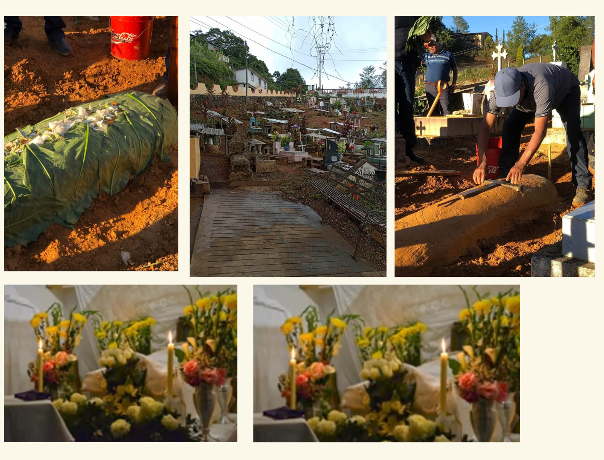
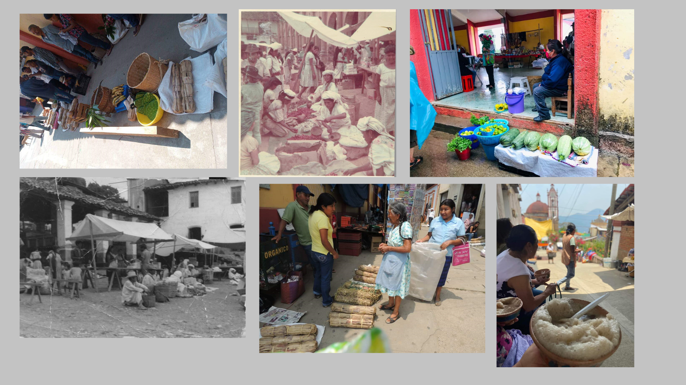
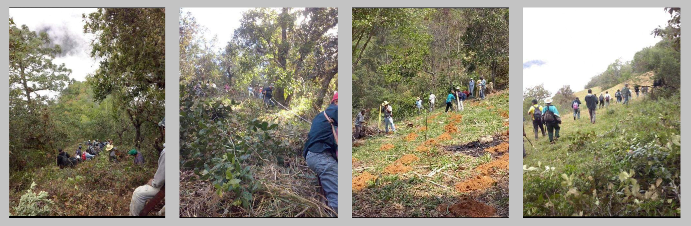

COSTUMBRES:
Las costumbres son formas de comportamiento particular que asume toda una comunidad y que las distingue de otras comunidades; como sus danzas,comidas,idioma o artesanías.

VELORIOS O FUNCIAS: Es un reuniòn de familiares que se vuelve pública cuando amigos y conocidos del difunto se acercan o expresar, sus condolencias.Es una oportunidad para demostrar solidaridad y recordar al fallecido. Durante un velorio,los asistentes pueden: 1.- Ofrecer sus condolencias a la familia. 2.-Comienzan a descombrar el lugar donde van a poner el altar donde va a estar el difunto durante los dias de vela.Con esto los familiares se les hace el comunicado a la autoridad para dar el conocimiento de la persona fallecida. 3.- Conforme van llegando la gente a la casa del fallecido se les dice a los hombres que si de favor pueden abrir la sepultura. En este transcurso se les lleva agua, refresco,mezcal o cerveza a las personas que estan abriendo la sepultura y con esta la invitacion a que pasen a comer a la casa. 4.- Cualquier funcia se empieza con chintesle, frijoles acompañados con chiles en vinagre,memelas de frijol zatope ya que es lo mas tradicional. 5.- Depende de la familia que tipo de carne se va a ocupar durante la funcia como la carne de pollo,de res o en ocasiones de puerco para la alimentacion que se les brindara a las personas que acompañan. 6.- Se nombran a señores y señoras para preparar la carne y buscar una persona que prepare la comida. 7.- Se nombran 2 personas para las tortillas, los platos, el agua,o alguna otra bebida como tambien a los que se van a encargar de recoger la mesa. 8.- Durante esa noche se vela el cuerpo y se acompaña de un rezo en el cual la banda que acompañe tocara partes del mismo. Culminando el rezo se les avisa a las personas que acompañaron durante este dia si el cuerpo sera trasladado al panteon despues del almuerzo o la comida.Con el acompañamiento de la banda. 9.- El dia del entierro a las 8 de la mañana se hace la entrega del cuerpo en la iglesia acompañado de un rezo, asi como se busca un cantor para llevar el cortejo funebre.
PLAZAS: Durante décadas la plaza ha sido un punto importante de comercio para muchos pueblos. En la comunidad de Villa talea de castro se reúnen comerciantes de Juquila, Reforma, San Juan Yaee, Tanetze de Zaragoza, El Porvenir, Las Delicias, Otatitlan de Morelos, Lalopa,Yaviche, Yatoni y otras comunidades vecinas vienen a esta plaza a realizar sus compras esto produce una gran algarabía no solo representa la venta e intercambio de productos, sino la convivencia de paisanos de distintos pueblos de la región. Sin duda los días de plazas son un momento especial y nos acerca los productos a nuestros hogares y nos permite saludar a nuestros amigos de otros pueblos

TEQUIOS: 1-Para empezar la autoridad Municipal hace una reunión de Cabildo para ponerse de acuerdo que trabajo van a realizar para organizarse y llevar a cabo el trabajo, y es la autoridad Municipal quien organiza. 2- Este tequio empezó desde que talvez se fundo Talea porque todo se hace a base de Tequios. 3- Se realiza distribuyendo a los ciudadanos de a cuerdo al trabajo que se va a realiza ya sea por seccion o por grupos. 4- Hay diferentes formas de hacer Tequios, si es de caminos, del campo, caminos dentro de la población, o de la carretera de maravillas-Talea. Si es dentro del pueblo es porque se aproxima una festividad o porque ya se requiere de la limpia de estos caminos. Si es tequio de los caminos del campo muchas veces porque los ciudadanos lo solicitan y si es tequio de la carretera Maravillas-Talea también porque se aproxima una festividad o también cuando ya se requiere dicho tequio. 